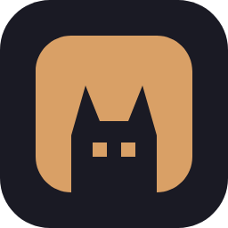
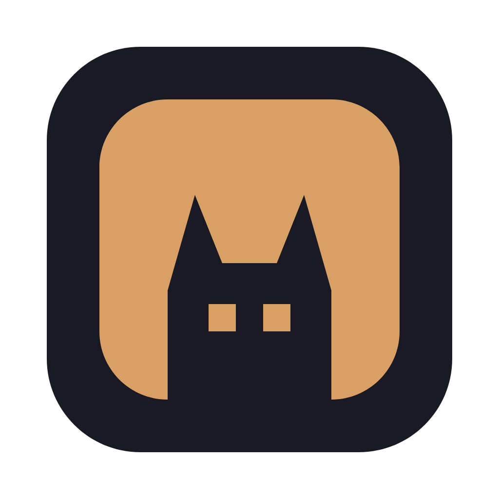
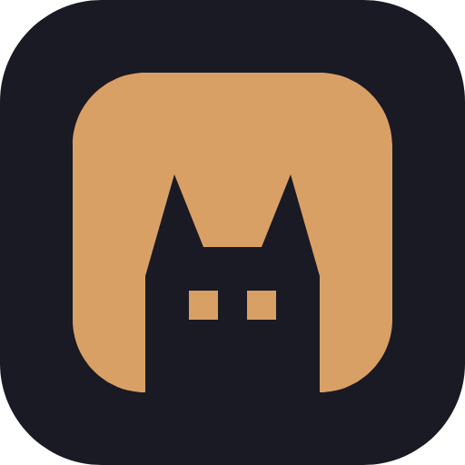

An open-source terminal workspace for running and supervising many AI coding agents at once. One calm, alert helper keeping the flock moving. The developer stays in charge.
▗▖ ▗▖ ▐▙▄▟▌ Kelpie ███▘███▄ agent workspace ███████▘ built on herdr ▐██▌ $ kelpie up ✓ 12 sessions running ▲ 1 waiting for you (api · claude-code) ◆ supervisor: assist
A rounded terminal window with a kelpie cut out of its lower edge: ears up, two eyes on the panes. The dog is negative space, so the mark is one colour by nature and inverts for free. Built on a 24-unit grid with 45° angles only; it rasterises cleanly at 16 px and in a single terminal cell.
IBM Plex Sans Semibold, tracking −3%. Title case Kelpie in prose and lockups; always lowercase kelpie as the command and in code contexts.
Clear space on every side equals the height of one ear (¼ of the mark). Minimum 16 px on screen, 5 mm in print. Below 24 px use the mark alone, never the lockup.
Multi-line mark is 5 rows × 8 cols; the splash header with text is 5 × 24. One-line is 9 cols: ▟▙ kelpie. Block characters only; no emoji.
All platform icons are the mark on a Ground-dark rounded square. Windows gets the full-bleed square; macOS keeps the 3-unit inset Apple expects. Favicon is the bare mark and follows the system colour scheme.

Windows · kelpie.ico
macOS · 1024 px
Linux · 256 / 512 PNGThe brand accent is Red Kelpie, the coat colour. It is used for the mark, links, the active row and nothing else; status colours carry meaning and the accent never competes with them. In 16-colour ANSI it falls back to yellow, which is why status is always paired with a glyph.
Dark uses Catppuccin Mocha hexes unchanged so the brand matches the shipping theme. Latte's yellow, green and peach fail 4.5:1 as text on a light ground, so light mode has a fill value (Latte, for glyphs and swatches) and a darker text value. Contrast ratios are against Ground.
[theme.custom] accent = "#d9a066" panel_bg = "#22222e" text = "#e4e2dc" green = "#a6e3a1" yellow = "#f9e2af" red = "#f38ba8" blue = "#89b4fa" teal = "#94e2d5" peach = "#fab387" mauve = "#cba6f7"
:root { --kelpie-accent: #d9a066; --kelpie-ground: #1a1a24; --kelpie-panel: #22222e; --kelpie-ink: #e4e2dc; --kelpie-status-waiting: #f38ba8; … } [data-theme="light"] { … }
{ "kelpie": { "brand": { "accent": { "dark": { "$type": "color", "$value": "#d9a066", "$extensions": { "dev.kelpie": { "xterm256": 180, "ansi16": "93" } } }, "light": { … } } }, "status": { … } }
Both OFL-licensed and self-hostable. JetBrains Mono for every product, code and terminal surface; it ships the box-drawing and geometric glyphs the brand relies on. IBM Plex Sans for headings, wordmark, website and README. In a user's terminal the mono family is whatever they run; the glyph set is tested in Cascadia Mono, Consolas, JetBrains Mono and Menlo.
Every state has a Unicode glyph and an SVG twin with the same silhouette. Shapes are chosen to stay distinct in monochrome: filled vs outlined, round vs angular, one mark vs two. Waiting-for-you is the only triangle and the only state allowed to blink or bold.
1 and 4 use the dog; 2, 3 and 5 do not. Use 1 on the README, 5 wherever the audience may not know the name yet.
One sentence. Kelpie is an open-source terminal workspace that runs many AI coding agents side by side and keeps you in charge of all of them.
One paragraph. Kelpie is a terminal multiplexer and runtime for AI coding agents such as Claude Code, Codex and pi. Run ten or more sessions side by side, each with its own native terminal UI, backed by a server-owned runtime with a local JSON API. A supervisor agent can watch every session and nudge it forward, with per-project permissions for observe, assist and autopilot. The human always wins. First-class on Windows 11 and PowerShell 7, and at home on Linux and macOS. Kelpie is a community fork built on herdr.
✓ session payments finished · 14 files changed · 6m 12s ▲ payments is waiting for you claude-code asks: run prisma migrate deploy on staging? kelpie attach payments · kelpie reply payments y ✕ could not start search codex: command not found. Install it or set agents.codex.path in kelpie.toml. Other sessions are unaffected.
Kelpie is a community fork. The attribution line appears in the README, the About screen, the --version output and the website footer. Set it in Muted, never in the accent, and never place herdr's logo next to Kelpie's.
Kelpie is a community fork built on herdr, an open-source project by its original authors. Kelpie is independently maintained and is not endorsed by or affiliated with the herdr project.
kelpie 0.4.0 · built on herdr 1.8 · MITEverything lives under assets/. Wordmark and lockup SVGs reference IBM Plex Sans by name; outline the text before shipping to contexts without the font.